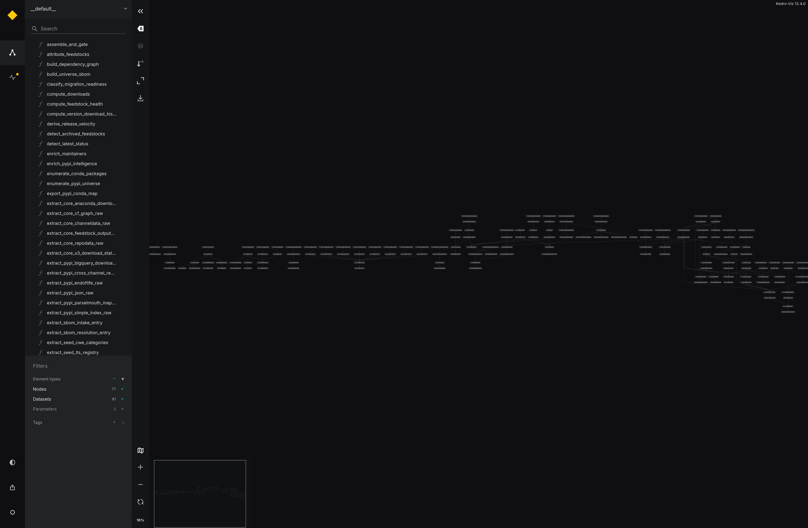

Captured from the live kedro viz server. Scroll / pinch or the buttons to zoom, drag to pan — read node names on the dense pipelines. Regenerate with capture-kedro-viz-proto.
kedro viz
capture-kedro-viz-proto
